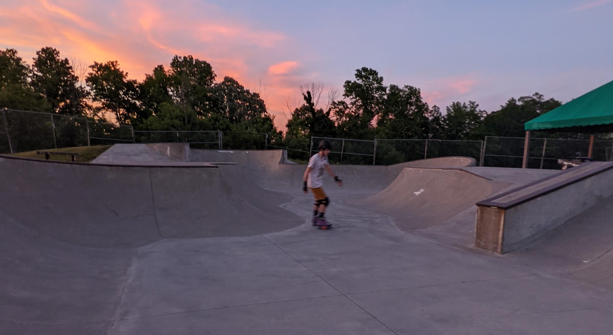
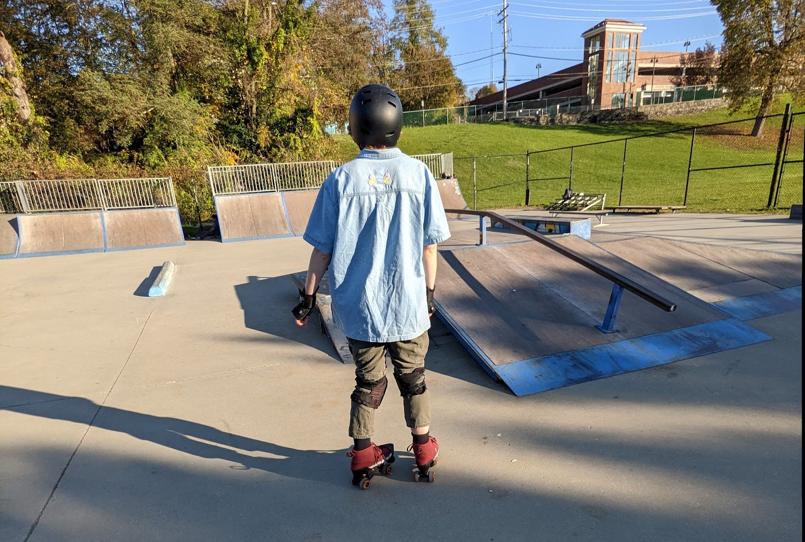
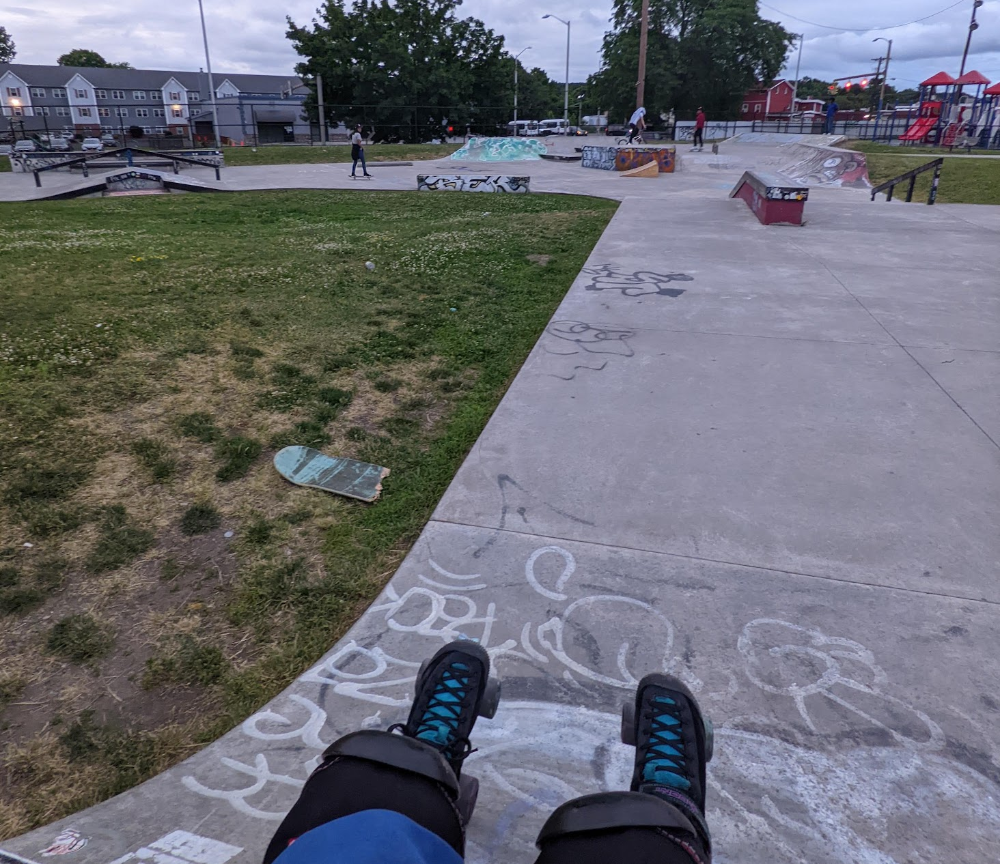

Skateparks
drop in at these local skateparks with features sufficient for shreddin on quads
Saugerties Skatepark
a municipal concrete beauty
tips for visiting Saugerties
- there are lights on the park at night, but it technically is not open, proceed at your own risk
- open bowl design is very beginner friendly if you cant drop in but want to carve
- concrete is smooth and well maintained, good spot to try harder or smaller wheels
Learn more about Saugerties Skate Park on the Town of Saugerties website.
Poughkeepsie Skatepark
the community led DIY on the bank of the Hudson
tips for visiting Poughkeepsie
- this is a former city run skatepark. The skate community took over its maintenence when the city no longer wanted to maintain it. Treat the park with respect and be kind to the regulars -they are the ones that are keeping it going
- because this is a DIY, the ramps sometimes get beat up and it takes while before it is addressed. Proceed with caution and avoid elements that look like they can be damaged to stay safe, and not make it worse.
- This park is right on the water, so it is often a decent bit colder there than it would be otherwise, bring a sweater or jacket.
- Walking distance from the Poughkeepsie train station, possible to reach without a car
Newburgh Skatepark
A flow style gem not to be missed
tips for visiting Newburgh
- there are a lot of mosquitos at this one n the summer, definitely pack big spray if you come in the evening
- great park to visit fo a beginner small ramps to practice dropping in, smooth surface, good blocks for jumping that are not too high